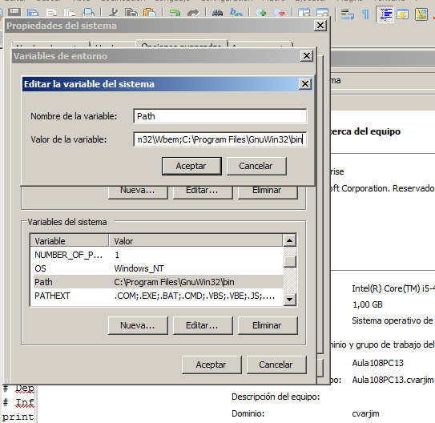
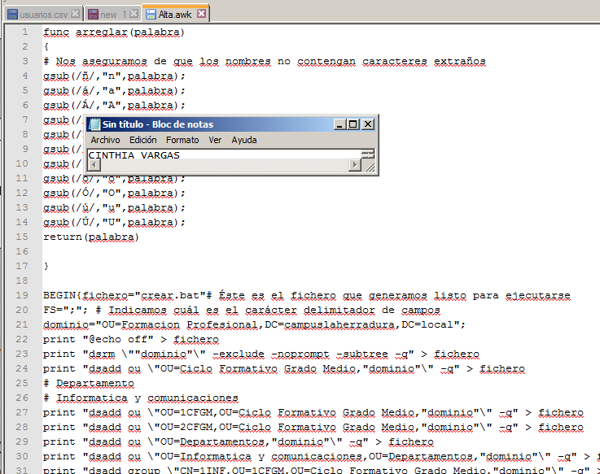

- Módulo: Sistemas Operativos
- Título del trabajo Generación de Usuarios
- Componentes del grupo: Cinthia A. Vargas Jiménez
- Curso Académico: 2014/2015
- Fecha de entrega: 27 de Febrero de 2015
Instalamos Gawk en Windows Server 2008
Para iniciar la actividad , nos dirigimos a :
Configuración del sistema

Después de descargar XCALCS modificaremos el script como se muestra en la siguiente captura , agregando la siguiente línea
Ejecutaremos el siguiente comando : cscript.exe /h:cscript y luego crearemos una carpeta en el disco local C:
Crearemos el fichero usuarios.csv
Crearemos el fichero usuarios.csv
